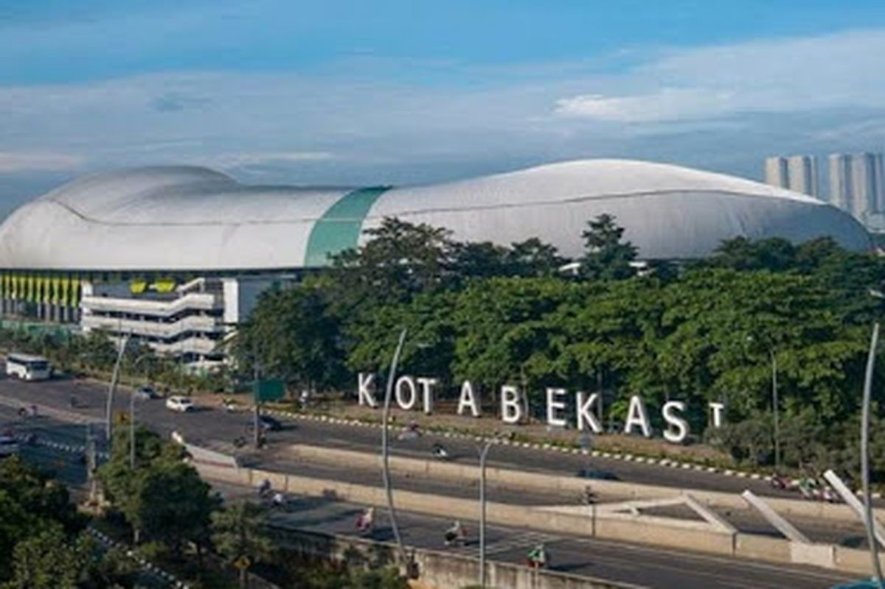
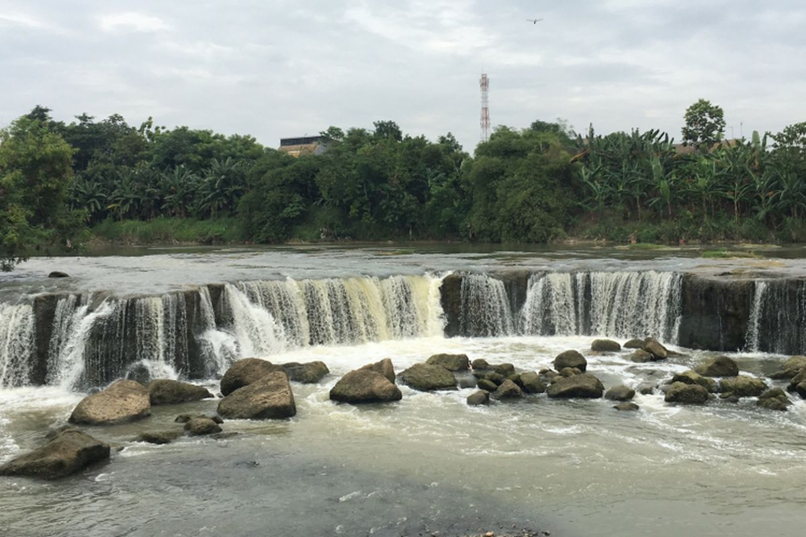

Sejarah

Dayeuh Sundasembawa atau Jayagiri, itulah sebutan Bekasi tempo dahulu sebagai ibu kota Kerajaan Tarumanagara. Luas Kerajaan ini mencakup wilayah Bekasi, Sunda Kelapa (Jakarta), Pasir Awi (Jonggol), Depok, Cibinong, Bogor, hingga ke wilayah Purwalingga.
Menurut para ahli sejarah dan fisiologi, letak Dayeuh Sundasembawa atau Jayagiri sebagai ibu kota Tarumanagara adalah di wilayah Bekasi sekarang. Dayeuh Sundasembawa inilah daerah asal Maharaja Tarusbawa (669–723 M) pendiri Kerajaan Sunda dan seterusnya menurunkan Raja-raja Sunda sampai generasi ke-40 yaitu Ratu Ragumulya (1567–1579 M).
Wilayah Bekasi tercatat sebagai daerah yang banyak memberi informasi tentang keberadaan Tatar Sunda pada masa lampau. Di antaranya dengan ditemukannya 4 prasasti yang dikenal dengan nama Prasasti Kebantenan. Keempat prasasti ini merupakan keputusan dari Sri Baduga Maharaja (Prabu Siliwangi, Jaya Dewa) yang ditulis dalam 5 lembar lempeng tembaga.
Sejak abad ke-5 Masehi pada masa Kerajaan Tarumanagara, abad ke-8 Kerajaan Galuh, dan Kerajaan Pajajaran pada abad ke-14, Bekasi menjadi wilayah kekuasaan karena merupakan salah satu daerah strategis, yakni sebagai penghubung antara Pelabuhan Sunda Kelapa (Jakarta).
Geografis
Kota Bekasi memiliki luas wilayah sekitar 210,49 km², dengan batas wilayah Kota Bekasi adalah:Kota Bekasi memiliki luas wilayah sekitar 210,49 km², dengan batas wilayah Kota Bekasi adalah: Utara: Kabupaten Bekasi, Timur: Kabupaten Bekasi, Selatan: Kabupaten Bogor dan Kota Depok, Barat: Provinsi DKI Jakarta.
Kondisi topografi Kota Bekasi dengan kemiringan antara 0–2 % dan terletak pada ketinggian antara 11–81 m di atas permukaan air laut.
Ketinggian ≥ 25 m: Kecamatan Medan Satria, Kecamatan Bekasi Utara, Kecamatan Bekasi Selatan, Kecamatan Bekasi Timur, dan Kecamatan Pondok Gede.
Ketinggian 25–100 m: Kecamatan Bantar Gebang, Kecamatan Mustika Jaya, Kecamatan Pondok Melati, dan Kecamatan Jati Asih.
Wilayah dengan ketinggian dan kemiringan rendah yang menyebabkan daerah tersebut banyak genangan, terutama pada saat musim hujan yaitu: Kecamatan Jati Asih, Kecamatan Bekasi Timur, Kecamatan Rawalumbu, Kecamatan Bekasi Selatan, Kecamatan Bekasi Barat, dan Kecamatan Pondok Melati.
Wisata
Bekasi, kawasan industri dan permukiman yang dikenal dekat dengan Ibukota Jakarta, ternyata memiliki
lebih dari sekadar gedung-gedung tinggi dan hiruk-pikuk perkotaan. Kota dengan populasi lebih dari 3
juta penduduk ini juga menawarkan beragam destinasi wisata menarik yang mendukung gaya hidup sehat
dan kebugaran fisik.
Transera Waterpark
Transera Waterpark adalah tempat yang menggabungkan kesenangan bermain air dengan aktivitas
kebugaran. Dengan tema eksotis khas Afrika, anda dapat berenang dan bermain di dua zona yang
berbeda, yaitu zona basah dan zona kering. Ini adalah cara yang menyenangkan untuk menjaga
kesehatan sobat Muscle sambil bersantai bersama keluarga.
Pantai Muara Gembong
Pantai Muara Gembong adalah tempat yang sempurna untuk bersantai dan melepas penat, terutama di
akhir pekan. Nikmati keindahan alamnya sambil menikmati hidangan seafood di warung-warung
sekitar
pantai. anda juga bisa berfoto dengan latar belakang pantai yang indah. Meskipun fasilitasnya
mungkin sederhana, pengalaman ini pasti akan membuat sobat Muscle merasa segar dan bersantai.
Curug Parigi

Curug Parigi adalah destinasi wisata alam yang menarik di Bekasi, sering disebut sebagai
"Niagara
Mini." Untuk mencapai air terjun yang luas ini, anda perlu melakukan sedikit trekking melalui
jalur
alam dengan pemandangan yang menantang. Ini adalah cara yang bagus untuk mencampurkan aktivitas
fisik dengan eksplorasi alam.